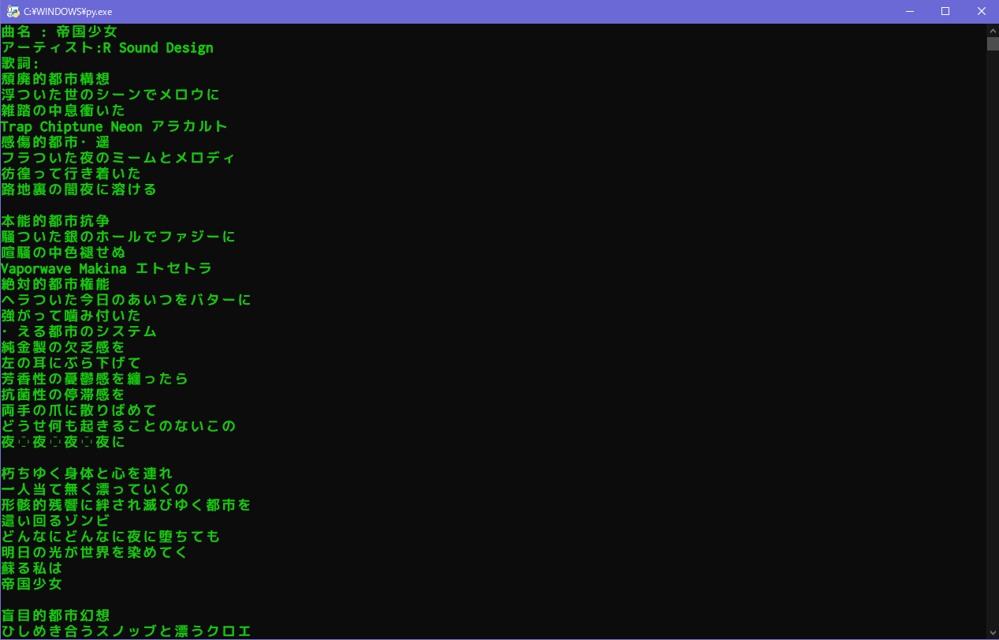

歌詞取得
歌詞取得プログラムをダウンロードなにができるの？
曲名を入力すると、歌詞を表示します。
こんな感じの画面です。
仕組みは？
プチリリ(歌詞サイト)で曲名を検索して、そこから歌詞をとってくる。
詳細
言語 : Python3
使用ライブラリ : BeautifulSoup, requests,
Source Code
import requests
from bs4 import BeautifulSoup
def get_kashi_all():
try:
get_kashi_all()
except AttributeError:
print('Error. 曲もしくは歌詞が存在しません。\n')
except:
gomi = '2'
want_song = (input('曲名 : '))#曲名
source_site = 'https://petitlyrics.com'
res = requests.get(source_site + '/search_lyrics?title=' + want_song)
soup_source = BeautifulSoup(res.content, "lxml")
lyrist_son = soup_source.find('span', class_ = 'lyrics-list-title')
#classが書かれている欲しいリンクの子クラスを指定。
#!!!以下からは歌詞があるサイト
res_song = requests.get(source_site + (lyrist_son.parent.get('href'))) #(lyrist_son.parent.get('href'))、ここで親要素を取得(href)
soup = BeautifulSoup(res_song.content, "lxml")
get_kashi = soup.find('canvas', id = 'lyrics')
get_Artist = soup.select('div.pure-u-1:nth-child(1) > div:nth-child(1) > p:nth-child(1) > a:nth-child(2)')
for Artists in get_Artist:
in_art = (Artists.string)
print('アーティスト:' + in_art + '\n' + '歌詞:' + '\n' + get_kashi.text + '\n-----------------------------------\n')
input()
get_kashi_all()
while True:
get_kashi_all()